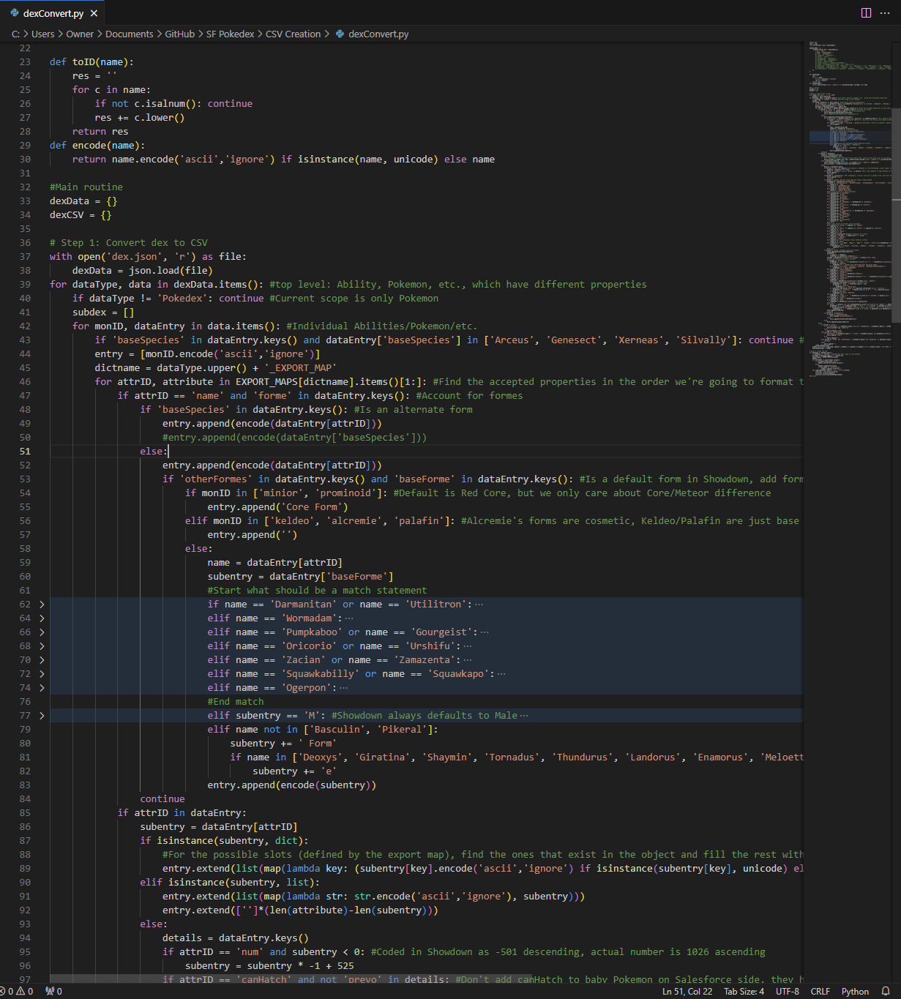

An ongoing project that showcases the power of Salesforce by compiling all over 1000 Pokemon data into a public-facing website. This includes the big details like, the small details like what color and shape they are in the Pokedex, and the details beyond the Pokemon themselves:
It has over 800 moves and the map of each Pokemon to the dozens of moves it learns, among other information. The end result is a database that is lightweight and easily naviagble (unlike the main wiki Bulbapedia) and comprehensive in scale (unlike the Pokemon Showdown! battle simulator, which only has battle-relevant information)
This information was compiled from Pokemon Showdown!, Bulbapedia, and custom spreadsheets where needed, then translated into Salesforce-importable data by a Python script I created. It is also based off of my Pokemon Earth & Sky expansion, which curtails much of what would be a long tail of moves and Abilities connected to only one Pokemon due to Game Freak's recent design decisions.